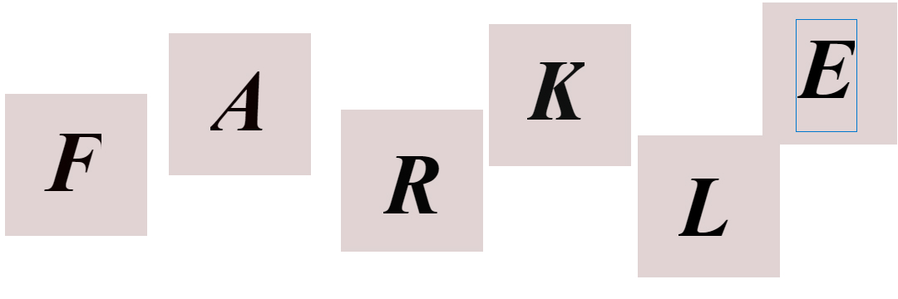

<!--
  Generated template for the Landing page.

  See http://ionicframework.com/docs/components/#navigation for more info on
  Ionic pages and navigation.
-->
<ion-header >

  <ion-navbar color="primary" text-center>
    <ion-title>Farkle!</ion-title>
    
  </ion-navbar>
</ion-header>
<ion-content padding >
  <button ion-button class="button-block" (click)="userLogin()">
    Login
  </button>
  <button ion-button class="button-block" (click)="goAbout()">
    About
  </button>
</ion-content>
